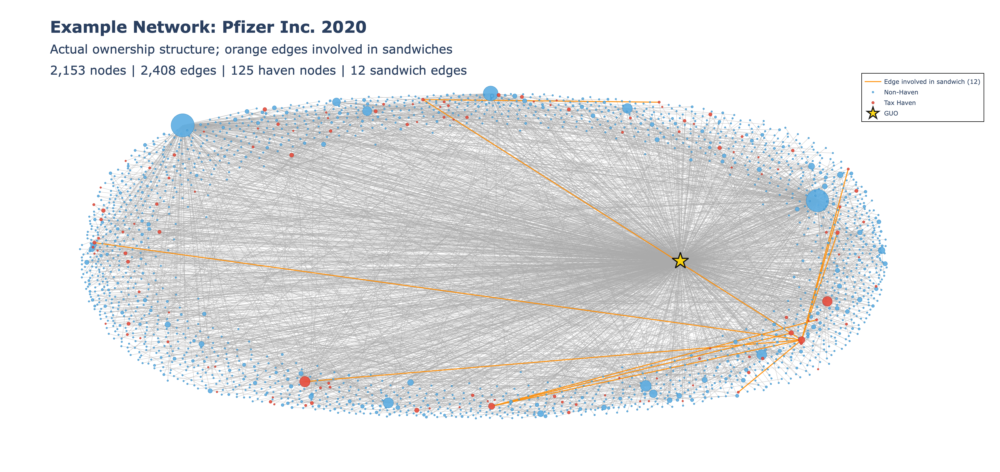
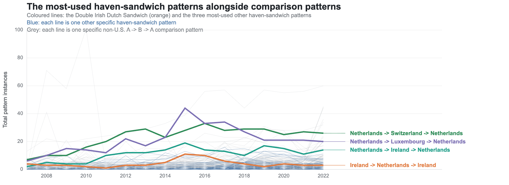
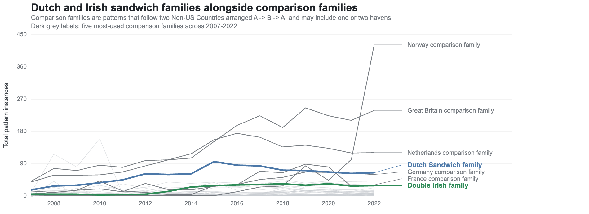

A
One observed ownership network

Pfizer's 2020 ownership graph; orange links mark edges involved in detected haven-sandwich paths.
U.S. multinationals may locate entities strategically to reduce effective tax rates by shifting intellectual property. The canonical Double Irish and Dutch Sandwich structures have drawn OECD scrutiny for enabling large-scale tax avoidance, estimated in the hundreds of billions annually.

Pfizer's 2020 ownership graph; orange links mark edges involved in detected haven-sandwich paths.


| Company | Instances | Industry | Top family |
|---|---|---|---|
| Pfizer | 119 | Pharmaceuticals | Netherlands |
| Merck | 110 | Pharmaceuticals | Ireland |
| General Electric | 105 | Transportation equipment | Netherlands |
| TTM Technologies | 68 | Electronic components | Other haven |
| Hasbro | 63 | Toy and misc. manufacturing | Netherlands |